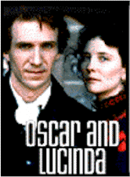

Contents | Features | Reviews | News | Archives | Store |
 |
|
| Movie Credits | Buy It! |
Oscar and Lucinda
Review by Carrie
Gorringe
Posted 30 January 1998
|  | Directed by Gillian Armstrong Starring
Ralph Fiennes, Cate Blanchett, Screenplay by Laura Jones, |
Oscar and Lucinda, according to all we’ve been told, is a film with an admirable pedigree, with its Booker-Prize-winning source material and its acclaimed director. You can literally hear the Oscar whispers rolling across the cinematic plain, the comparison with last year’s best film, The English Patient, being beyond resistance. Both films, after all, have the Booker prize and the tortured soul of Ralph Fiennes in common. Unfortunately, that’s where all similarities end, for where The English Patient had an epic sweep and doomed characters with dignity and pathos, Oscar and Lucinda substitute a fatal blend of provincialism and outright asinine behavior. The result is not inspiring, but risible. The antics on screen, many of which approach a level of baroque grotesquerie which is seldom (fortunately) an overriding characteristic in this type of film, are so embarrassing to all involved that the filmgoer won’t be sure whether to laugh at the unintentional display of humor or to avert his/her eyes from the screen from sheer embarrassment at the ineptitude displayed within.
The main problem in stems from inadequate characterization by the filmmakers, who have skimmed off what little, but vital, psychological motivation was provided by the author, and who haven’t helped matters any by allowing the more bizarre visual aspects of characterization to prevail. Thus, it becomes extremely difficult to sustain much fascination over the antics of a gambling Anglican priest (Fiennes) and an ahead-of-her-time suffragette with shady personal habits (Blanchett). Fiennes, looking for all the world like an uneasy cross between the aw-shucks pathos of Charlie Chaplin in City Lights, and the puckishness of Red Buttons (complete with a shock of red hair – and it is quite a shock), wanders around in sorrow-filled aimlessness. It’s supposed to be disarming, but ends up being merely bothersome. The attraction between audience and character is perverse; Oscar really has no moral underpinnings, save for a whole bucketful of guilt that he trots out when convenient as a means of salving his conscience. That’s not to say that amorality in a man of the cloth isn’t compelling, but simply that, as written, Oscar’s angst is simply a bunch of self-inflicted ado about nothing. This is a man, after all, whose apostasy was set off simply because Daddy forbade him to eat Christmas pudding one year, who becomes a compulsive gambler to give all to the poor, and whose love for a woman leads to the most absurd of behavioral non-sequitors. Oscar is no hero with moral qualms; he’s more like a child in need of a nanny, and, as such, really hasn’t the necessary machismo quotient to support the symbolic and narrative framework that has been placed in his hands. Even his Don Quixote-like quest to bring architecture to the unwashed has a dispirited air from the very beginning. The same disjointedness between character and expectations reigns in Lucinda. Lucinda is supposed to be, by 1850s standards, the very model of a radical female, right down to the pants she wears and her sojourns to Chinese gambling dens (there are no cigarettes in sight, alas, to complete the picture of nineteenth-century moral turpitude). Unfortunately, what is interpreted as rebelliousness is actually nothing more than willful flightiness; underneath her bravado, Lucinda is really worried about what the neighbors might think, and her concern is illogical. After all, she really has no intention of ever marrying – the primary, because so obligatory, obsession of women in her era – so her concern about her reputation appears to be rather misplaced. The meeting of Oscar and Lucinda is less a melding of brilliant, yet idiosyncratic, minds than it is an unhealthy bonding of two fey malcontents who need someone just as mentally unbalanced as each of them is as a form of psychological reassurance. You know a set of characters is in serious trouble when, after an hour or so of screen time, their only means of expressing a mutual passion is to scrub a floor together – with no intention of interrupting said domestic idyll for something more carnal. It’s not certain, either in the film or the book, whether their love is supposed to follow this rather Platonic pattern, but surely if a man is willing to float a glass church up the river for a woman, even at the risk of having to endure his fear of water, logic dictates that some sort of deeper feeling has to be involved; whatever it is, the audience never really knows, and the lack of knowledge causes the relationship to denigrate into an enervating emotional sludge. There’s amour fou – mad, manic love – and then there’s amour fou, which is the type of love you’d have to be crazy to consider worthy of your time. There are no extra points at this stage for guessing where this reviewer believes Oscar and Lucinda to exist (we won’t even discuss the obviously banal metaphoric elements that presume to give both book and film a reputation for intellectual depth that is most surely undeserved).
Even more egregiously, the film not only provides inadequate explication for the character’s actions, but the brutality of the synoptic treatment makes the film seem as rushed and impetuously episodic as the overly madcap couple at its center. The film progresses at such a rapid clip, from Australia to England and back, that there really is no sense of what drives these characters to behave as they do. Their actions seem to be motivated by nothing in particular.
The adaptation from book to film has too much of a stripped-down feel to it, and internal logic is the casualty. All of this haste in the name of narrative economy serves no useful purpose: Oscar and Lucinda clocks in at just over two hours and fifteen minutes, but gives the impression that its thematic and narrative developments are just getting started one hour and forty-five minutes into the proceedings. As the plot begins to thicken, it dissipates, leaving the viewer with little choice but to wonder, disbelievingly, at what he/she has missed. The answer to that question, alas, is at once too much and too little.
Contents | Features | Reviews | News | Archives | Store
Copyright © 1999 by Nitrate Productions, Inc. All Rights Reserved.